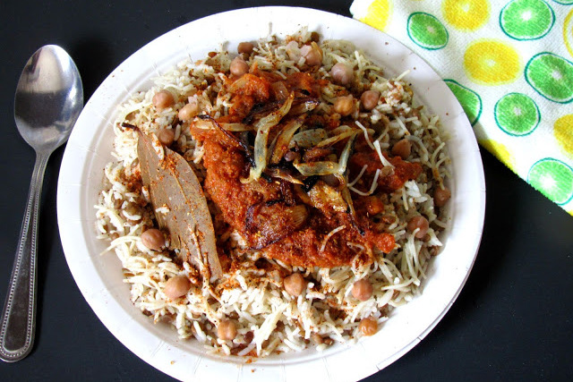
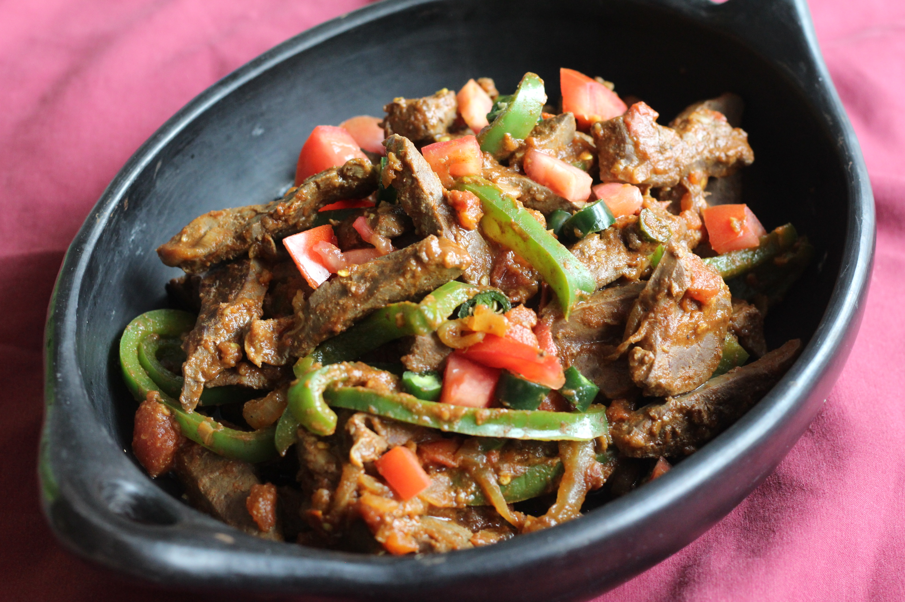
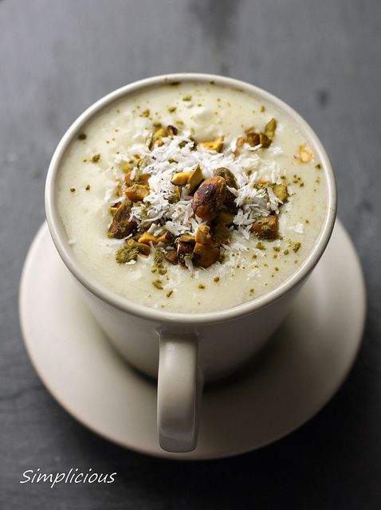
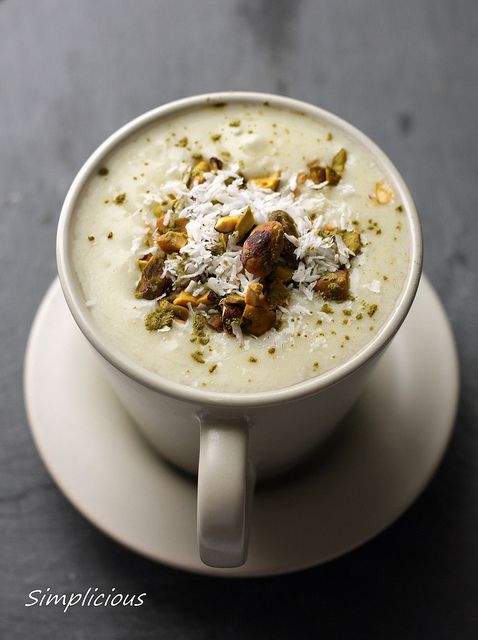

Main Dish
Koshari

- 1 tablespoon vegetable oil
- 2 cups uncooked white rice
- 3 cups water
- 1 teaspoon salt
- 1 (16 ounce) package uncooked elbow macaroni
- 2 1 cup beluga lentils, soaked in water
- 1/2 teaspoon salt
- 1 tablespoon vegetable oil
- 5 onions, minced
Ingredients:
- 2 cloves garlic, minced
- 3 tablespoons distilled white vinegar
- 4 ripe tomatoes, diced
- 1/2 cup tomato paste
- 1 1/2 teaspoons salt
- 1 teaspoon ground black pepper
- 2 1/2 teaspoons ground cumin
Directions:
- Heat 1 tablespoon vegetable oil in a saucepan over medium-high heat. Stir in rice; continue stirring until rice is coated with oil, about 3 minutes. Add 3 cups water and 1 teaspoon of salt. Bring to a boil; reduce heat to low, cover, and simmer until the rice is tender and liquid has been absorbed, 20 to 25 minutes.
- Fill a large pot with lightly salted water and bring to a rolling boil over high heat. Stir in the macaroni, and return to a boil. Cook the macaroni uncovered, stirring occasionally, until the it has cooked through, but is still firm to the bite, about 8 minutes. Drain well in a colander. Return macaroni to cooking pot, cover and keep warm.
- Soak lentils for 30 minutes. Drain and rinse; drain again. Bring 2 cups water to a boil in a pot and stir in lentils. Bring to a boil; cover and reduce heat to low. Simmer until lentils are tender 15 or 20 minutes. Stir in 1/2 teaspoon salt..
- Heat 1 tablespoon vegetable oil in a large skillet over medium-high heat. Cook the onions in the oil, stirring often, until they begin to brown, 10 to 15 minutes. Onions should be a nice caramelized brown color. Add garlic and cook another minute. Remove from pan, drain on a paper towel-lined plate.
- Place half of the onion mixture into a saucepan. Mix in the vinegar. Add the chopped tomatoes and tomato paste, black pepper, 2 1/2 teaspoons salt, cumin, and cayenne (if using). Bring to a boil then reduce heat to medium-low and simmer about 12 minutes.
- Serve by placing a spoonful of rice, then macaroni, and then the lentils on serving plates. Sprinkle with some of the browned onions, then top with tomato sauce.
Alexandrian Style Liver (Kebda Eskandarani)

- 1/3 cup cooking oil
- 1 lb (400 gm) calf’s liver, chopped
- 6 garlic cloves, crushed and minced
- 1 large green bell pepper, chopped
- 1 medium onion, chopped
- 1 chili pepper, seeded and chopped (add as many as you want to make it really spicy)
- 1 1/2 Tbs cumin powder
Ingredients:
- 1/2 tsp cinnamon powder
- 1/4 tsp ginger powder
- 1/4 tsp cloves powder
- 1/4 tsp cardamon powder
- Juice of one lime or lemon
- 1 tsp salt
Directions:
- Start by choosing a large pan with a cover.
- Over high heat, Heat the oil in the pan
- When the oil is very hot, add the liver.
- Liver is delicate. Quickly and carefully stir fry it until it changes color.
- Add all remaining ingredients and mix well.
- Cover the pan. And over medium low heat, cook the liver for 15 minutes.
- That’s it. The liver is ready!
Dessert
Basbousa

Basbousa
- 2 cups semolina flour
- 1/3 teaspoon baking powder
- 1 cup white sugar
- 1 cup sweetened flaked coconut
- 1/4 cup butter, melted
- 1 cup plain yogurt
Ingredients:
- 1/4 cup milk, or as needed
- 1/4 cup whole almonds
- 1 cup water
- 1 cup white sugar
- 1 tablespoon lemon juice
Directions:
- Preheat the oven to 350 degrees F (175 degrees C). Grease an 8 inch square baking dish.
- In a large bowl, mix together the semolina flour, baking powder, 1 cup sugar, coconut and butter. Add the yogurt and milk; mix until moistened but not runny or liquid. If you see that it is too dry, add more milk. Spread into a greased 8 inch square baking dish, smoothing the top as much as possible. Decorate the top with whole almonds.
- Bake for 40 to 45 minutes in the preheated oven, until golden brown. While the basboosa is baking, combine the water, 1 cup of sugar and lemon juice in a small saucepan. Bring to a boil, and cook for at least 5 minutes.
- When the basboosa has finished baking, pour the syrup over it as evenly as possible. Place it back in the oven for about 5 minutes, or until the syrup has been fully absorbed. Let rest for about 20 minutes before cutting into pieces and serving.
Drink
Sahlab

Sahlab

- 1 cup plain yogurt
- 1/2 cup water
- 1/2 cup milk
- 1 teaspoon ground cumin
Ingredients:
- 1 teaspoon chopped cilantro leaves
- 2/3 teaspoon salt
- 1 pinch black pepper
Directions:
- Combine the yogurt, water, milk, cumin, cilantro, salt, and pepper in a blender, and blend until smooth. Serve plain or over ice.